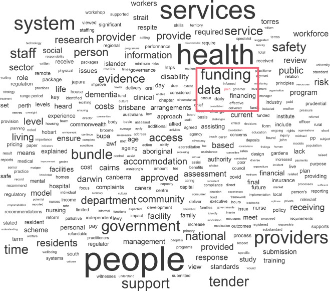

![]()
In the early months of 2022, I worked as a researcher for HammondCare, a not-for-profit Australian organisation. HammondCare delivers aged care and health services in hospital, residential, home, and community settings. During my time with the organisation, I worked with a team of scientists to research and improve aged care practices. This goal was critical, as in 2021, an Australian Royal Commission into Aged Care Quality and Safety recommended a profound shift in practices, in order to “provide high quality care that is predictable, reliable and delivered through a system which is sustainable” (The Royal Commission’s Final Report pg., 3). From my time with HammondCare, I helped write a peer-reviewed feasibility study of a digital tool to track pastoral care activities, a letter to the editor on the adoption of a mobile service funded by the Australian Government to respond to severe or very severe behaviours of people with dementia living in residential aged care homes, and a short piece on the co-prescription of multiple classes of psychotropics to people with neuropsychiatric symptoms referred to an Australian dementia support service. But in a new article published at Aging and Health Research, my HammondCare colleagues and I studied the Royal Commission itself.
The Royal Commission into Aged Care Quality and Safety received a total of 10,574 submissions, 6,800 telephone calls to an information line, and heard 641 witnesses. These submissions lead to two reports: an Interim Report in 2019 and a Final Report in 2021. In the Interim and Final Report, we found mentions of the word “pain”. This is isn’t entirely surprising, given pain affects the vast majority of older Australians, and is often under-diagnosed and under-treated. What was surprising was that in the Royal Commissions 148 recommendations to improve aged care, there was not a single mention of the word pain. Although the Royal Commission discussed pain in their reports, the topic was omitted from recommendations, reflecting a lack of attention to the presented evidence Without specific recommendations for pain management, a disconnection may arise between targeted polices, programs and funding schemes, and the clinical practice. Thus, older adults living in the community and residential aged care homes may remain vulnerable. If this topic interests you, you can read more about it in the open access article at Aging and Health Research here.

Reuse
Citation
@online{andreotta2023,
author = {Matthew Andreotta},
title = {New Article: “{Does} Pain Matter in the {Australian} {Royal}
{Commission} into {Aged} {Care} {Quality} and {Safety?} {A} Text
Mining Study”},
date = {2023-02-27},
url = {https://matt-lab.github.io/posts/2023-02-27_new-article},
langid = {en}
}